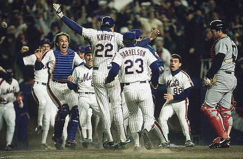

The purpose of this page is to outline both the successes and failures of the New York Mets in the World Series. With 5 apperances, they have only succeeded in winning the series twice. This page takes a brief look at each of these World Series matchups. Select a year to read more about each individual matchup.
